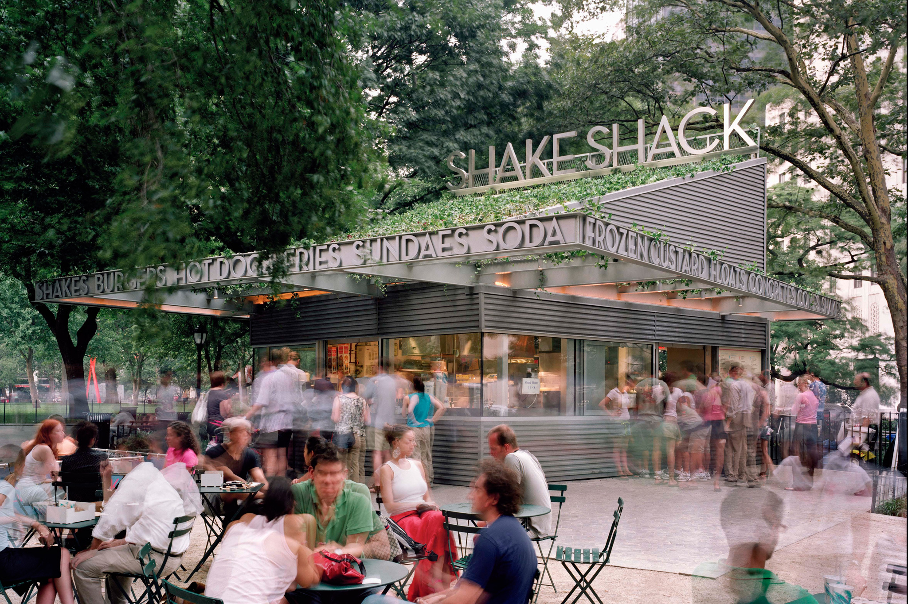
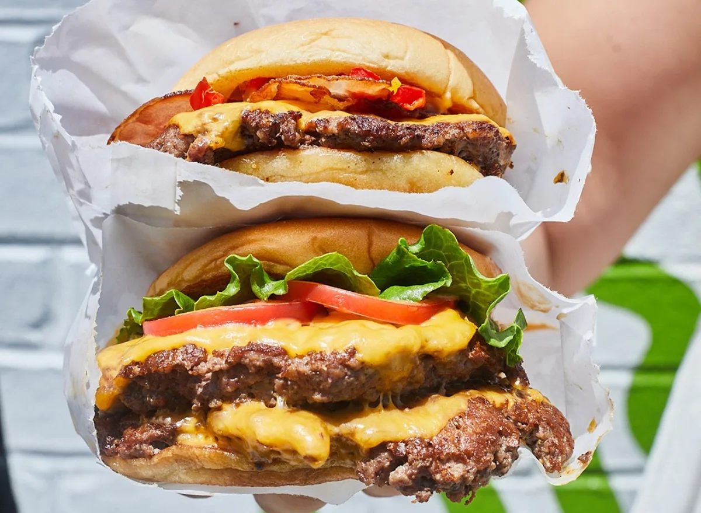

In 2000, New York City began the rebuilding of Madison Square Park, which had fallen into a state of disrepair and misuse. As part of the redevelopment, restaurateur Danny Meyer helped spearhead the creation of the Madison Square Park Conservancy to help redevelop it. One of the first things the Conservancy did in its goal to improve the park was to host an art exhibit called "I love Taxi" inside of the park to raise awareness of the renewal effort. Meyer's Director of Operations, Randy Garutti, established a hot dog cart which was run out of the kitchen of Eleven Madison Park, one of Meyer's Union Square Hospitality Group (USHG) operations. Over time, the cart became extremely successful, and remained in operation for nearly three years.
In 2004, the city began taking bids to operate a new kiosk-style restaurant within the park; Meyer outlined his idea for the space, and opened the first Shake Shack in July 2004. From its beginning the restaurant was not designed to be a chain; it was intended to be a single shop location designed specifically for New York City. However, as the original location's sales continued to grow, the group realized that there was a market for expansion.
Since its opening, Shake Shack has grown to be the largest part of the USHG's portfolio. Its average store revenue of US$4 million is more than twice that of McDonald's average store revenue within the United States.[12] Its popularity is such that in the summer at its original location, the wait in line for service can stretch to over an hour, especially on weekends when the weather is pleasant. A webcam on the restaurantweb page shows the current line in real time.
In June 2010, Shake Shack opened its first restaurant outside of New York City at the Lincoln Road Mall in Miami Beach's South Beach neighborhood.In April 2017 the location completed a month-long renovation that added 586 square feet of space, bringing its seating capacity to 106.
On July 12, 2010, Shake Shack restaurants were opened in the Theater District and the Upper East Side. The Upper East Side location's opening was significant because it "lifted" East 86th Street, an urban shopping district which had fallen on hard times; the location had been vacant, and even when occupied, it was described by a neighbor as "never anything good there...dingy and dilapidated...almost an eyesore."
In July 2011, it was announced that Shake Shack had reached a deal with the MTA to open a location in the lower level of Grand Central Terminal.[21] This project was delayed because the tenant occupying the space Shake Shack was to take over, Mexican eatery Zócalo, refused to vacate after the expiration of their lease and filed suit, arguing that the "bidding process (for retail space in Grand Central) is corrupted."The suit was dismissed and Zócalo appealed. In October 2012 Zócalo filed for Chapter 11 bankruptcy protection. In early May 2013, Zócalo vacated the space, and the new outlet opened for business on October 5, 2013.
Shake Shack opened its first airport location in May 2013 in JFK's newly expanded Terminal 4.
By August 2014, Shake Shack outlets had begun operating in California, Connecticut, Delaware, Washington, D.C., Florida, Georgia, Illinois, Maryland, Massachusetts, New Hampshire, New Jersey, Nevada, Pennsylvania, Texas and Virginia, in addition to the New York locations. That month, reports surfaced that the company was preparing to go public with an IPO and was discussing an underwriting with a number of investment banks, including J.P. Morgan, Morgan Stanley and Goldman Sachs.
On January 29, 2015, Shake Shack priced its IPO at $21 per share. On the morning of January 30, 2015, it began trading on the NYSE at $47 per share under the ticker symbol SHAK. In April 2015, shares hit prices of $72, and hit a high of about $90 in May 2015. In its IPO filing, the company stated that it planned to expand its domestic footprint to 450 company-operated stores. While no end date was given for that expansion, the company indicated its intention to open at least 10 restaurants each fiscal year, though it later amended that target to 12 a year and then again later in 2016 to 14 stores a year, a goal that would result in a total of 450 stores in approximately 25 years. Later that May, Shake Shack filed for a trademark for the term "chicken shack" leading to speculation that the company would serve chicken sandwiches. The company temporarily introduced chicken sandwiches to its Brooklyn on July 7, 2015. In January 2016, Shake Shack introduced chicken sandwiches across locations in the United States, having previously started serving them at all Brooklyn Shake Shack locations.
On August 31, 2016, Shake Shack announced it would begin room service at the Chicago Athletic Association Hotel, the first hotel in America to offer in-room Shake Shack.
In November 2016, the first Houston, Texas, location opened inside the Galleria; by March 2017, another opened inside Minute Maid Park in Downtown Houston, with another to open there in August 2019, the 5th overall in the city. The city's 3rd opened at Rice Village in March 2018. By December, the city's 4th opened in Montrose district. In mid-December 2016, Delaware opened its very first in Newark. In February 2017, the first Michigan location was opened in downtown Detroit. A second Michigan location in Troy opened on October 25, 2017. On May 10, 2017, Shake Shack opened their first Kentucky location at The Summit at Fritz Farm in Lexington. That June, the company announced a location would open in Charlotte, North Carolina, in late 2017, becoming the first Shake Shack in the Carolinas. California's 5 locations were all in L.A. County, until the 6th had opened in San Diego on October 20, 2017 at Westfield UTC. The other San Diego location opened in Mission Valley in late 2017, as did a South Bay location in El Segundo in October.
On June 7, 2018, Shake Shack opened their first Ohio location inside Orange Village in East Cleveland, Ohio. More Cleveland area locations would open soon after including an outlet inside the Cleveland Hopkins International Airport main concourse.
On October 10, 2018, Shake Shack announced that it will officially start operations in Singapore at Jewel Changi Airport in 2019. As of 2021, there are eight locations in the city-state.
On June 27, 2019, Shake Shack opened in Mexico City]at Paseo de la Reforma, one of Mexico's busiest streets. The opening was so popular that on opening day, people had it wait in line for about two hours. The restaurant chain is expected to open 30 locations in Mexico by 2029, beginning with the next location in the south of Mexico City in Coapa.
On August 3, 2019, Utah's first location opened in the suburb of Sandy and was built into a 90-year-old historic elementary and high school.
On April 16, 2021, the first Shake Shack in Oregon opened in Beaverton. A second restaurant is scheduled to open in downtown Portland in 2022.
On January 10, 2022, Shake Shack and South Korean food conglomerate SPC Group announced they would launch 10 Shake Shacks in Malaysia in the next 10 years, with the first store due to open in 2023.
In April 2020, Shake Shack applied for funding through the Paycheck Protection Program due to lost business during the COVID-19 pandemic. It received $10 million. Shake Shack was criticised for utilizing a loophole in the program which allowed it to qualify for monetary aid meant to help small businesses. The company operates 189 locations in the U.S., but only employs around 45 persons at each restaurant. Shake Shack CEO Randy Garutti then said it would return the $10 million so that "restaurants who need it most can get it now." In July, it was revealed that Shack Shake founder Danny Meyer's Union Square Hospitality Group took a total of between $11 and $27 million in PPP funding. Meyer was unapologetic about receiving the relief funds, despite the fact that the firm employs a total of 2,300 employees. When the Shake Shack relief funding was revealed, he had earlier appeared on at least one podcast stating that its acceptance of PPP funding was irresponsible.
Shake Shack has frequently been the headlining restaurant at The Infatuation's EEEEEATSCON food festival in Santa Monica, California and Forest Hills, New York. Culinary Director Mark Rosati is known for creating exclusive burger and shake collaborations local restaurants for the festival. In 2018 he collaborated with Brooklyn's Emily restaurant to create a Shack-style burger topped with American cheese, a special “Emmy” sauce and caramelized onions. The burger was so popular that tickets for the event sold out one week in advance, and it was described as a "mash-up of pizza and burger flavors" and "transcendent".[51][52] In 2019 he collaborated with Petit Trois in Santa Monica and Uncle Boons in Forest Hills. The company sells branded T-shirts, sunglasses, and other accessories, called Shack Swag.
Shake Shack's shakes have been reviewed as "some of the best in the industry". It also sells chicken burgers, fries, hot dogs, frozen custards, and beer and wine. In each new location, the beverage menu is customized to the local flavors of the city in which it operates. In each new location, the beverage menu is customized to the local flavors of the city in which it operates.
In June 2020, employees of a Shake Shack restaurant in Lower Manhattan were falsely accused of poisoning two police officers with bleach after they reported that their shakes had a strange taste. The accusations originated online from the Detectives' Endowment Association and the Police Benevolent Association of the City of New York and were widely shared on social media before being reported by numerous media outlets. police investigation found no criminality on the part of the Shake Shack workers and the restaurant was cleared of wrongdoing. Shake Shack later stated that the strange taste of the drinks may have been caused by faulty cleaning of a milkshake machine.
Check out drinks also sold at Shake Shack
Coffee